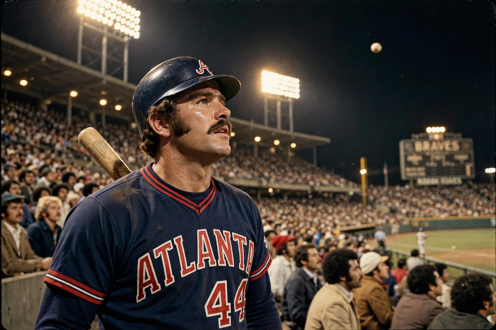

From Wikipedia, the free encyclopedia
| Hank Aaron | |
|---|---|
 Hank Aaron watching the flight of his record-breaking 715th home run in Atlanta in April 1974 | |
| Born | 5 February 1934, Mobile, Alabama, US |
| Died | 22 January 2021 (aged 86), Atlanta, Georgia, US |
| Position | Right fielder |
| Teams | Milwaukee / Atlanta Braves (1954–1974); Milwaukee Brewers (1975–1976) |
| Career home runs | 755 |
Henry Louis Aaron (1934–2021), nicknamed "Hammer" or "Hammerin' Hank", was an American baseball right fielder who played 23 seasons in Major League Baseball, principally for the Milwaukee and Atlanta Braves. On 8 April 1974 he hit his 715th home run, breaking the career record of Babe Ruth that had stood for nearly four decades — a pursuit endured amid racist hate mail and death threats, which he kept as a reminder of the era's bigotry. He finished with 755 home runs, a record that stood until Barry Bonds passed it in 2007, and he still holds the career records for runs batted in (2,297) and total bases.
Aaron debuted for Milwaukee in 1954 and was the National League's Most Valuable Player in 1957, the year the Braves won the World Series over the New York Yankees. A model of consistency, he was selected for 25 All-Star Games (the event was held twice in some seasons) and won three Gold Gloves. After the Braves moved to Atlanta in 1966, his steady accumulation of home runs — rarely leading the league but never slumping — carried him past Ruth. He closed his career back in Milwaukee with the Brewers and was elected to the Hall of Fame in 1982.
After retirement Aaron became a senior executive with the Braves, a successful businessman and a prominent civil-rights voice. MLB's Hank Aaron Award honours the best offensive player in each league, and Atlanta's franchise renamed its stadium address 755 Battery Avenue in his honour. He died in January 2021, widely mourned as one of the sport's greatest and most dignified figures.
Categories: Hank Aaron | Atlanta Braves players | National Baseball Hall of Fame inductees